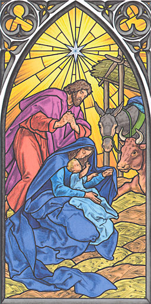
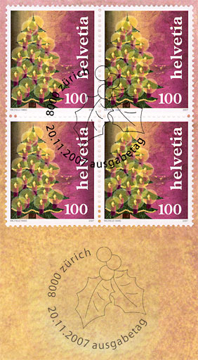
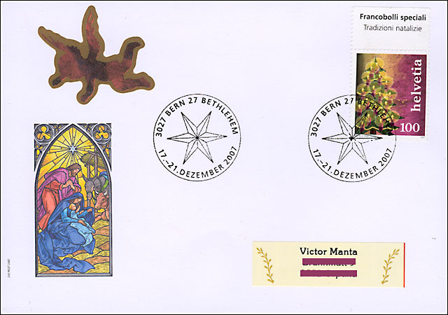
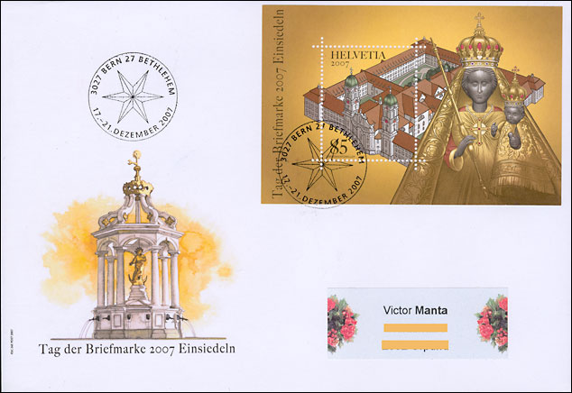
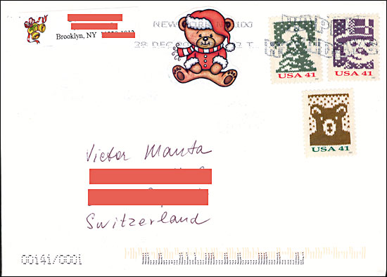
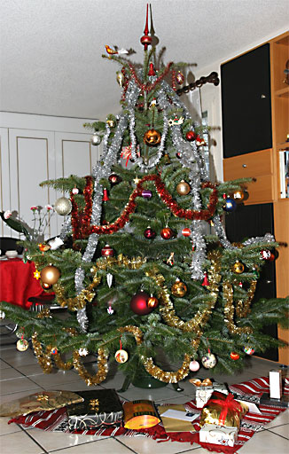

Christmas Philatelic Beauties
|

For many people, a tree decked with colorful ornaments and candles is central to giving their homes that genuine Christmas feel. However, the Christmas tree tradition is not as old as often believed and has only been the centerpiece of family celebration since the 19th century, simultaneously with the beginning of the industrial revolution.
|
 |
 |
In German-speaking Switzerland, the Christmas tree's popularity did not begin until around the turn of the 2oth century, originally in schools and Protestant churches, as well in the middle-class homes. And it was only in the 1950s that such trees became prevalent in Catholic areas and in Canton Ticino where cribs had traditionally been the focus of Christmas festivities.

The history of the
Christmas tree has its roots in Alsace, and today's glass decorations with
their different shapes and sizes are a link back to the apples, nuts,
confectionery and little gifts that originally decorated these trees in the
past.
(After: Dominik Wunderlin, Museum der Kulturen, Basel, Focus on Stamps,
4/2007).

Swiss Post is continuing its popular range of Bethlehem
philatelic material with a card, completed by a special cover and matching
cancellation from Bern-Bethlehem. Again the card depicts a scene from the
Bible - this year, the birth of Jesus. The Christmas card and special
cancellation designs are the work of Christian Kitzmüller, a Zürich-based
artist who began in 2006 a new series which will run until 2009. A
stained-glass window provided the inspiration for the 2007 Christmas Card
and the FDC.
The stamps of the Christmas Customs 2007 series were
designed, as in 2006, by the Swiss artist Michèle Haas.
A nice cover that I received from the USA. Unfortunately, one of stamps is not cancelled.

Finally, a non-philatelic item, the rather unorthodox tree of my family:

Links:
-
Stamps Christmas Tree, with greetings from 38 stamps collectors, in 16 different languages
-
Liechtenstein, Christmas 2001. Medallions in Wooden Frames
-
Liechtenstein, Christmas 1979. Embroideries.